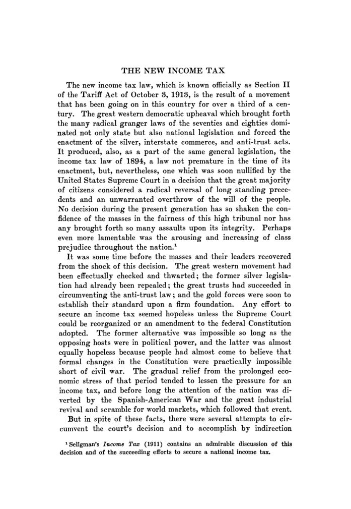

Blakey, 1914: como nasceu o imposto de renda federal americano?
Leitura: 9 min
Blakey descreve o imposto de renda de 1913, com alíquota de 1%, isenção de US$ 3.000 e adicional de até 6%, e conclui que seus princípios são sólidos e que o êxito depende da administração.


O imposto de renda federal americano entrou em vigor como seção II da lei tarifária de 3 de outubro de 1913. Poucos meses depois, Roy G. Blakey, de Cornell, encontra a imprensa cheia de declarações de advogados e banqueiros segundo as quais a lei seria intrincada, inconsistente e incompreensível. Ele responde que há verdade e exagero nessas queixas: a lei é curta, um esqueleto de princípios simples, e os detalhes ficam para os regulamentos do Commissioner of Internal Revenue, com aprovação do secretário do Tesouro.
O artigo tem três partes: a história que levou ao imposto, a descrição da lei e uma crítica ponto a ponto. Blakey escreve como defensor do princípio e crítico de vários detalhes.
Por que o imposto demorou tanto?
Blakey liga o imposto ao movimento agrário do Oeste das décadas de 1870 e 1880, que produziu também as leis da prata, do comércio interestadual e antitruste. A lei do imposto de renda de 1894 foi anulada pela Suprema Corte, e, para contornar a decisão, era preciso reorganizar o tribunal ou emendar a Constituição. Houve tentativas indiretas: na guerra hispano-americana, um imposto especial sobre as receitas brutas das refinarias de petróleo e de açúcar foi mantido pela Corte, assim como um imposto federal sobre heranças.
Em 1909, para conter a pressão por um imposto geral, os líderes republicanos aceitaram um imposto baixo sobre as empresas e a submissão de uma emenda constitucional aos estados. A ratificação só se completou em 1913, quando o novo governo democrata já se preparava para criar o imposto sob a forma de imposto de consumo, caso a emenda falhasse. Blakey compara a adoção do imposto, destinado a cobrir o déficit esperado com a redução das tarifas, à adoção do imposto de renda inglês em 1842, ligada à revogação das leis dos cereais.
Como o imposto está montado?
São, na prática, três impostos. O primeiro é um imposto normal de 1% sobre toda a renda líquida anual das empresas, sem isenção. O segundo é um imposto normal de 1% sobre a renda líquida individual acima de US$ 3.000, com dedução de US$ 4.000 para casais. O terceiro é um imposto adicional, progressivo, sobre a renda individual acima de US$ 20.000, que as empresas não pagam.
A renda inclui salários, juros, lucros e ganhos de qualquer transação, mas não os seguros de vida recebidos nem os bens herdados ou doados. Podem ser deduzidas as despesas do negócio, os juros pagos, os impostos, as perdas não indenizadas, as dívidas incobráveis e a depreciação. A lei isenta os juros dos títulos federais, estaduais e municipais, os vencimentos dos servidores estaduais e locais, os salários do atual presidente e dos juízes federais em seus mandatos, e organizações sem fins lucrativos.
O imposto normal individual é retido na fonte sempre que possível: a empresa ou o agente que paga a renda desconta o imposto e o repassa ao governo. Há exceções importantes, como as rendas irregulares e os pagamentos anuais inferiores a US$ 3.000 de uma mesma fonte, salvo os juros de títulos de empresas. O imposto adicional depende da declaração pessoal, porque nenhuma fonte conhece a renda total do contribuinte. Para pôr a lei em funcionamento, foram destinados US$ 800.000 ao ano fiscal encerrado em 30 de junho de 1914.
A progressividade e a isenção se justificam?
Blakey considera ponto pacífico que a renda familiar é medida mais justa de tributação que o consumo de mercadorias taxadas pela tarifa. Admite que um imposto proporcional seria mais fácil de administrar e que teria sido prudente começar só pelo imposto normal, mas observa que a opinião pública não aceitaria uma lei tão contrária às ideias populares de justiça. As alíquotas, diz, são moderadas, e o imposto é quase insignificante para a grande maioria das rendas.
A isenção de US$ 3.000 é alta em comparação internacional e, por isso, criticada como um imposto de classe sobre os ricos, votado pelos que não o pagam, e um imposto regional sobre o Leste, votado pelo Oeste. Blakey reconhece verdade nas duas críticas, mas oferece três argumentos. O padrão de vida americano é mais alto; US$ 3.000 de 1913 compram tanto quanto US$ 2.000 em 1894; e o novo imposto é complementar, porque, pelas estimativas do Tesouro, renderá menos da metade do que se perderá com a redução das tarifas, que continuam a pesar mais sobre os consumidores de renda baixa.
O argumento decisivo é administrativo. Uma isenção alta deixa de fora justamente as rendas que dão mais trabalho e menos receita, e as pequenas rendas são mais bem alcançadas por impostos indiretos. Baixar a isenção agora multiplicaria as dificuldades de lançamento e cobrança mais depressa que a receita. O imposto deve ser visto como o primeiro passo de um sistema que poderá ser ampliado à medida que se formarem dados e pessoal treinado.
Blakey resume o ponto: “a justiça como regra e a injustiça ocasional é melhor que o contrário”. (“Justice as a rule and injustice occasionally is better than the reverse”)
Onde estão os defeitos?
O primeiro é a moradia própria. A lei não diz que o valor locativo da casa ocupada pelo dono é renda tributável. O dono de uma mansão na Quinta Avenida com valor locativo de US$ 100.000 nada paga sobre ela, enquanto o inquilino de uma casa igual, ou de um cortiço, paga imposto sobre a renda gasta com aluguel. O segundo é a tributação das empresas: os dividendos de holdings serão tributados duas vezes, e o acionista com renda abaixo da isenção não recupera o imposto pago pela empresa.
O terceiro é a evasão. O imposto será menos eficaz, como em outros países, sobre rendas de negócios e profissões, que não podem ser retidas na fonte. A autodeclaração, escreve, sempre premia a evasão. Também será difícil exigir que o contribuinte declare sua parte nos lucros não distribuídos das empresas, se elas não lhe informarem o valor. E a tributação de não residentes e de estrangeiros residentes cria casos de dupla tributação internacional.
A queixa mais ruidosa dos primeiros meses veio dos bancos, obrigados a exigir certificados de propriedade nos cupons de juros de títulos ao portador. Blakey considera a exigência necessária: sem ela, quem recebesse US$ 100.000 de juros poderia mandar quarenta amigos apresentarem os cupons em lotes de US$ 2.500 e escapar do imposto. Substituir a retenção pela declaração pessoal, diz, transformaria a lei numa farsa.
Quem decide o êxito do imposto?
Blakey vê duas vantagens fiscais. Como na Inglaterra, a alíquota pode ser ajustada de ano para ano às necessidades do governo, o que não se faz com tarifas sem perturbar os negócios; mas os Estados Unidos só aproveitarão essa vantagem quando tiverem controle orçamentário adequado. E o imposto serve às emergências: na guerra, as receitas aduaneiras caem justamente quando o governo mais precisa de dinheiro.
Os riscos estão na administração. A lei retirou os principais cargos do concurso público por dois anos, o que dá liberdade ao Commissioner, mas abre a porta ao clientelismo, e limitou a remuneração dos inspetores a US$ 5 por dia, mais US$ 3 de diárias. Falta aos Estados Unidos um corpo de inspetores como o inglês. Blakey aponta Wisconsin, cujo imposto estadual de renda tem administração considerada excelente, como exemplo do que pode ser feito.
A conclusão é que “a administração eficiente é a grande exigência”. (“efficient administration is the great desideratum”)
Na minha leitura
Na minha leitura, o artigo é uma aula sobre como a técnica de arrecadação molda a política tributária. Blakey defende a isenção alta não por justiça, mas por economia administrativa: começar pelas rendas fáceis de alcançar e deixar as difíceis para quando houver máquina. A retenção na fonte e a progressividade, observa, não combinam, porque quem retém não conhece a renda total, e esse conflito decide boa parte do desenho.
Os defeitos que ele aponta são os que acompanham o imposto de renda desde então: o tratamento da moradia própria, a dupla tributação dos lucros distribuídos, a evasão nas rendas não sujeitas a retenção. Blakey não os trata como falhas de princípio, mas como problemas de fronteira que a regulamentação teria de resolver, e reconhece que a regulamentação certa poderia ser a mais impopular.
Glossário
- Imposto normal
- parcela de alíquota única, 1%, do imposto de renda de 1913.
- Imposto adicional
- parcela progressiva, de 1% a 6%, sobre a renda individual acima de US$ 20.000.
- Isenção (abatement)
- valor da renda individual não tributado: US$ 3.000, ou US$ 4.000 para casais.
- Retenção na fonte
- desconto do imposto por quem paga a renda, antes de entregá-la ao contribuinte.
- Valor locativo
- aluguel que um imóvel renderia; na moradia própria, a renda implícita do dono.
- Holding
- empresa que detém ações de outras empresas e recebe seus dividendos.
- Capitalização de um imposto
- efeito de um imposto, ou de uma isenção, sobre o preço de um ativo.
Fontes
- The New Income Tax — Roy G. Blakey (Cornell University) (pp. 25–46). JSTOR · Internet Archive (PDF)
- Edição completa, com os demais artigos: Nº 128 do Arquivo.
Documento em domínio público (EUA, publicado antes de 1931), via JSTOR Early Journal Content e Internet Archive. Resumo e comentário do autor deste site, sem afiliação com a American Economic Association. Encontrou um erro? Escreva: a correção é publicada no próprio texto, com data.
← Willis, 1914: como nasceu a lei do Federal Reserve? ↑ Nº 128 · Março de 1914: o Federal Reserve, o imposto de renda e os juros